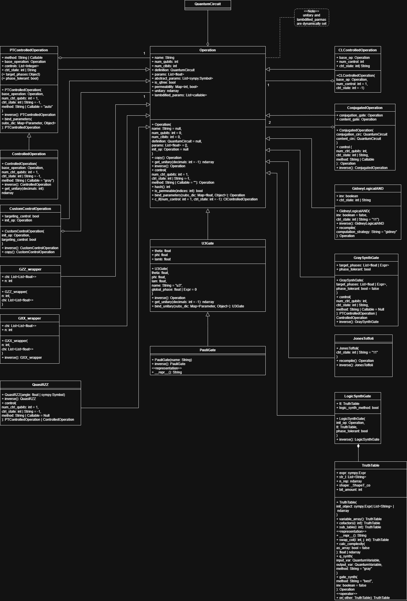

Operations

Information about classes and methods
The ‘Operations’ is one of the most central diagrams within the Qrisp framework. It is an especially important diagram as it defines the operations that can be applied to a quantum circuit. Central of this class is the ‘Operation’ class, practically every class inherits from it. Operations are used on a ‘‘QuantumCircuit’’ object, as quantum gates, measurements or classical logic gates [19].
Operation
Class functionality:
As described in the qrisp documentation:
“This class describes operations like quantum gates, measurements or classical logic gates. Operation objects do not carry information about which Qubit/Clbits they are applied to. This can be found in the Instruction class, which is a combination of an Operation object together with its operands.” [19]
Class constructor and attributes:
The class constructor is built with the following attributes, described in the Qrisp-documentation as:
“Operation objects consist of five basic attributes:
- .name : A string identifying the operation
- .num_qubits : An integer specifying the amount qubits on which to operate
- .num_clbits : An integer specifying the amount of classical bits on which to operate.
- .params : A list of floats specifying the parameters of the Operation
- .definition : A ‘QuantumCircuit’. For synthesized (i.e. non-elementary) operations, this ‘QuantumCircuit’ specifies the operation.” [19]
Additionally an ‘init_op’ object is optionally received. Although these are the attributes received by the constructor the class has a few more attributes: ‘abstract_params’, which are represented as a list of Sympy Symbols [20], ‘is_qfree’ a bool describing if the unitary is a permutation matrix [14]. ‘permeability’ is a dict that maps integers, representing the indices of qubits to a bool, depending if it is permeable on that qubit. ‘Unitary’ is an ndarray, describing the unitary of the operation. The last available attribute is ‘lambdified_params’, which is a list of functions. ‘Unitary’ and ‘lambdified_params’ are both set within if-junctions and thus declared as “dynamically set” in an annotation within the diagram.
Class methods:
The class has many useful methods. The methods give possibilities to manipulate the Operation and to get further information, such as the inverse or unitary. A ‘Operation’ object can also be converted into a ‘ClControlledOperation’, with the method ‘c_if’.
Details and design decision:
The ‘Operation’ class is central of the diagram. With the ‘append’ method from ‘QuantumCircuit’ it is possible to apply these objects to a quantum circuit. A ‘QuantumCircuit’ can be converted to a ‘Operation’ object with the ‘to_gate’ function of the ‘QuantumCircuit’. Its sub classes are:
- PTControlledOperation
- ControlledOperation
- CustomControlOperation
- GZZ_wrapper
- GXX_wrapper
- QuasiRZZ
- U3Gate
- CLControlledOperation
- ConjugatedOperation
- GidneyLogicalAND
- GraySynthGate
- JonesToffoli
- LogicSynthGate
- StimNoiseGate
- ParityOperation
PTControlledOperation
Class functionality:
As described in the source code:
“This class describes phase tolerant controlled operations.
Phase tolerant means that the unitary can take the form
[D_0, 0, 0, 0]
[0, D_1,0, 0]
[0, 0, D_2, 0]
[0, 0, 0, U]
Where U is the operation to be controlled and D_i are diagonal operators.” [14]
Class constructor and attributes:
The class constructor has 4 parameters, an ‘Operation’ as ‘base_operation’, an optional integer ‘num_ctrl_qubits’ with 1 by default, an optional integer or String ‘ctrl_state’, which is by default -1 and an optional String or function ‘method’, which is “auto” by default. ‘num_ctrl_qubits’ is the range for the class attribute List ‘controls’. Every other parameter has a respective class attribute.
Class methods:
The class implements the methods from its parents class respectively to its ‘PTControlledOperation’ versions.
Details and design decision:
Two attributes of the class are surrounded by round brackets. Because this part of the code is unreachable, it was decided is not of relevance. The class ‘ControlledOperation’ inherits from this class.
ControlledOperation
Class functionality:
As described in the source code:
“Class to describe controlled operation
Very similar to phase tolerant operations but with a more specific naming
convention, inversion algorithm and unitary generation algorithm.” [14]
Class constructor and attributes:
The class constructor has 4 parameters, an ‘Operation’ as ‘base_operation’, an optional integer ‘num_ctrl_qubits’ with 1 by default, an optional integer or String ‘ctrl_state’, which is by default -1 and an optional String or function ‘method’, which is “gray” by default. Every attribute is getting passed to the parent constructor. The class doesn’t have any attributes of itself.
Class methods:
This class contains two methods: ‘inverse’ and ‘get_unitary’
Details and design decision:
‘ControlledOperation’ is the subclass of ‘PTControlledOperation’
CustomControlOperation
Class functionality:
The class extends Operations and creates a custom, control-style quantum operation based on an existing operation. It’s behavior depends on the flag ‘targeting_control’.
Class constructor and attributes:
The constructor has two cases depending on the bool ‘targeting_control’. When ‘targeting_control’ is false, the class adds an extra control qubit and shift the original operation onto the remaining qubits. If it is true, the operation is wrapped exactly as it is with no additional qubits or structural changes. The constructor also instantiates two attributes, that are unique to the class: the bool ‘targeting_control’ and the ‘init_op’ Operation.
Class methods:
The class has two methods, ‘inverse’ creating the inverse of the Operation and ‘copy’, creating a copy of the ‘CustomControlOperation’
Details and design decision:
This class inherits from ‘Operation’. There is also an aggregation, due to the ‘init_op’ object.
GZZ_wrapper
Class functionality:
The ‘GZZ_wrapper’ is a multiqubit GZZ-Gate. A GZZ-Gate is in it’s core a collection of RZZ-Gates which phases are implemented in a matrix.
Class constructor and attributes:
The constructor has two parameters: ‘n’, an Integer and ‘chi’ a matrix of floats, here declared as a List in a List with the type float.
Class methods:
The class does not have methods
Details and design decision:
It is unclear for what the ‘n’ integer is being used for, as it does not reappear in the code again. The class does not implement any methods but in the source code the ‘GZZ_converter’ method is very close to it [14].
GXX_wrapper
Class functionality:
The ‘GXX_wrapper’ is a multiqubit GXX-Gate. A GXX-Gate is in its core a collection of RXX-Gates which phases are implemented in a matrix.
Class constructor and attributes:
The constructor has two parameters: ‘n’, an Integer and ‘chi’ a matrix of floats, here declared as a List in a List with the type float.
Class methods:
The class has a ‘inverse’ method, that returns the inverse.
Details and design decision:
It is unclear for what the ‘n’ integer is being used for, as it does not reappear in the code again. The method GXX_converter in the source code is very close related to it [14].
QuasiRZZ
Class functionality:
‘QuasiRZZ’ is a custom ‘Operation’ that behaves like an RZZ-type interaction, implemented using a sequence of two CNOTs and a phase gate. It also supports controlled versions of this operation.
Class constructor:
The class constructor has one parameter ‘angle’ which can be a float or a sympy.Symbol.
Class methods:
The class has two methods, an ‘inverse’ method, which returns the inverse and a ‘control’ method that returns either a ‘PTControlledOperation’ or a ‘ControlledOperation’
Details and design decision:
The class has no unique attributes. It inherits from ‘Operation’.
StimNoiseGate
Class functionality:
As described in the Qrisp source code [34]:
“Class for representing Stim errors in Qrisp circuits. This class is used to wrap Stim instructions into Qrisp Operations. These operations are effectively identity gates (they have an empty definition) but carry the information about the Stim noise channel. When converted to Stim circuits, these operations are replaced by the corresponding Stim instruction.”
Class constructor:
The class constructor receives 3 parameters:
- Stim_name: String – this parameter is the name of the Stim error gate [34]. This attribute gets instantiated.
- params: float - “The parameters of the error channel (e.g. error probability). Further details about the semantics of the parameters can be found in the ‘Stims gate reference https://github.com/quantumlib/Stim/blob/main/doc/gates.md#noise-channels’” [34]
- pauli_string: String – “A string of Pauli operators (e.g. ``XX``) for correlated errors.” [34] This attribute gets instantiated and is optional.
Class methods:
The class methods are as follows:
- ‘inverse’ – this method throws an exception
- ‘control’ – this method throws an exception
- ‘c_if’ – this method throws an exception
Details and design decision:
This class inherits from the ‘Operation’ class.
U3Gate
Class functionality:
The ‘U3Gate’ class implements a gate a generic single-qubit rotation gate with 3 Euler angles. [21]
Class constructor and attributes:
The class attributes are ‘theta’, ‘phi’, ‘lamb’, which are floats. The get instantiated by the class constructor, which has ‘theta’, ‘phi’ and ‘lamb’ as parameters. Additionally the constructor has the following parameters: a String ‘name’, which is “u3” by default and a ‘global_phase’, which can be an ‘Expr’ or a float.
Class methods:
The class has three methods: ‘inverse’, which returns the inverse, ‘get_unitary’ which returns the unitary and a ‘bind_parameters’ method which evaluates the symbolic parameters of a ‘U3Gate’, returning a U3Gate
Details and design decision:
This class inherits from ‘Operation’ and is the parent class of ‘PauliGate‘
PauliGate
Class functionality:
The ‘PauliGate’ class implements the X, Y, and Z Pauli Gates.
Class constructor:
The constructor receives a string ‘name’, which dictates the type of Pauli Gate of the object.
Class methods:
The class has two methods: ‘inverse’, which returns the Inverse of the Pauli Gate and a dunder method ‘__repr__’ which alters the way a ‘PauliGate’ Object is represented.
Details and design decision:
The ‘PauliGate’ class inherits from ‘U3Gate’. The class has no unique attributes.
CLControlledOperation
Class functionality:
The ‘CLControlledOperation’ class constructs a classically-controlled version of a ‘Operation’ object. The gate is only executed when a set of classical bits match a specified control state.
Class constructor and attributes:
The constructor receives an Operation ‘base_op’, an integer ‘num_control’ and an integer ‘ctrl_state’, which are instantiated as class attributes.
Details and design decision:
The ‘CLControlledOperation’ class inherits from ‘Operation’ and has no unique methods. There is an aggregation between ‘CLControlledOperation’ and ‘Operation’, because a ‘CLControlledOperation’ couldn’t exist without an Operation, but the ‘Operation’ can still persist without the ‘CLControlledOperation’.
ConjugatedOperation
Class functionality:
The class ‘ConjugatedOperation’ provides a data structure for two Gates to be conjugated with each other by receiving a “conjugator” and “conjugand”.
Class constructor and attributes:
The class receives two ‘‘QuantumCircuit’’ objects: ‘conjugation_circ’ and ‘content_gate’. These objects which are instantiated as ‘Operation’ objects ‘conjugation_gate’ and ‘content_gate’ with the ‘to_gate’ method of ‘‘QuantumCircuit’’. The constructior then calls the parents constructor with conjugated_gate as the definition.
Class methods:
‘ConjugatedOperation’ provides two methods: ‘control’ and ‘inverse’.
Details and design decision:
The ‘ConjugatedOperation’ class inherits from ‘Operation’. There is an aggregation between ‘ConjugatedOperation’ and ‘Operation’, because a ‘ConjugatedOperation’ couldn’t exist without an Operation, but the ‘Operation’ can still persist without the ‘ConjugatedOperation’.
GidneyLogicalAND
Class functionality:
The class ‘GidneyLogicalAND’ defines a an ‘Operation’ for a logical “AND” condition between two Qubits. It uses specific quantum algorithms such as the Margolus-algorithm and provides functionality to invert and compile operations.
Class constructor and attributes:
The constructor receives a bool ‘inv’ which is false by default and a string ‘ctrl_state’ which is by default “11”. These parameters are instantiated as the class attributes.
Class methods:
The class contains two methods: ‘inverse’ and ‘recompile’.
Details and design decision:
The class inherits from ‘Operation’.
GraySynthGate
Class functionality:
The class provides a data structure to synthesize Gray Gates, optionally with target phases and phase tolerance.
Class constructor and attributes:
The constructor receives a List out of floats or Expr ‘target_phases’ and a bool ‘phase_tolerant’ which is by default false. These parameters are instantiated as the class attributes.
Class methods:
The class contains two methods: ‘control’ and ‘inverse’.
Details and design decision:
The class inherits from ‘Operation’.
JonesToffoli
Class functionality:
As described in the source code:
“Implementation of the T-Depth 1 Toffoli found in https://arxiv.org/pdf/1212.5069.pdf” [14]
Class constructor:
The class constructor receives one parameter ‘ctrl_state’, which can either be an integer or a string. It is by default “11”. It constructs an “uncompiled_jones_toffoli” by appending a x gates to a ‘‘QuantumCircuit’’ first and second qubit and then adding an “amy_toffoli” ‘‘QuantumCircuit’’.
Class methods:
The class has two methods: ‘recompile’ and ‘inverse’.
Details and design decision:
The class has no unique attributes and inherits from ‘Operation’
LogicSynthGate
Class functionality:
The class ‘LogicSynthGate’ combines an ‘Operation’ and a truth table and creates a new ‘Operation’. It can be phase tolerant too.
Class constructor and attributes:
The class constructor receives 3 parameters, an ‘Operation’ as ‘init_op’, a ‘TruthTable’ as ‘tt’ and a bool as ‘phase_tolerant’, of which the last two get instantiated as class attributes. ‘phase_tolerant’ is ‘logic_synth_method’.
Class methods:
The class provides an ‘inverse’ method.
Details and design decision:
The class inherits from ‘Operation’ and has an composition to an object of ‘TruthTable’. This is because a ‘TruthTable’ for the ‘LogicSynthGate’ could not exist without a ‘LogicSynthGate’.
ParityOperation
Class functionality:
The class is described in the Qrisp source code [34]
“Operation class representing a Stim parity instructions (DETECTOR or OBSERVABLE_INCLUDE). This operation is used to interface with Stim's DETECTOR and OBSERVABLE instructions during the conversion process. It acts as a placeholder in the Qrisp QuantumCircuit. The operation takes n input clbits (the measurements to compute parity of). Parity results are tracked via ParityHandle objects returned by jaspr.to_qc()."
Class constructor and attributes:
The constructor receives 3 parameters:
- ‘num_inputs: int’ – This parameter creates a definition ‘QuantumCircuit’ that is later used in the parents constructor
- ‘expectation: int = 0’ – this parameter is by default 0 and gets instantiated. It is not used within the class
- ‘observable: bool = false’ – this parameter is by default false and gets instantiated. It is not used within the class
Details and design decision:
This class implements no methods. It inherits from the ‘Operation’ class
TruthTable
Class functionality:
As described in the source code:
“Class to describe truth tables. Can be intialized with a list of bitstrings, or a numpy array with 1 and 0s or a sympy expression.” [14]
Class constructor and attributes:
The constructor receives a ‘init_object’, that can be either a sympy expression, a list of strings or a numpy array. The attributes are dynamically set, depending on the if-junctions. The attributes are the following: ‘expr’, which is an sympy expression, ‘str_l’ which is a list of strings, ‘n_rep’ which is a numpy array, ‘shape’ which is a ‘_ShapeT_cp’ (numpy datatype) and ‘bit_amount’ which is an integer.
Class methods:
The class has many methods: logical methods like ‘cofactors’, ‘swap_col’, ‘calc_complexity’ but also synthesize methods such as ‘q_synth’ or ‘gate_synth’. The class also contains two dunder methods: ‘__repr__’, which changes the way a ‘TruthTable’ object is printed or represented as a string. The second dunder method ‘or’ alters the logic of the logical OR operation between two ‘TruthTable’ objects.
Details and design decision:
While this class is not an Operation it is closely related to the ‘LogicSynthGate’ and thus has been picked up into the ‘Operations’ diagram. The class is an composition object for the class ‘LogicSynthGate’.
This concludes the ‘Operations’ UML class diagram.